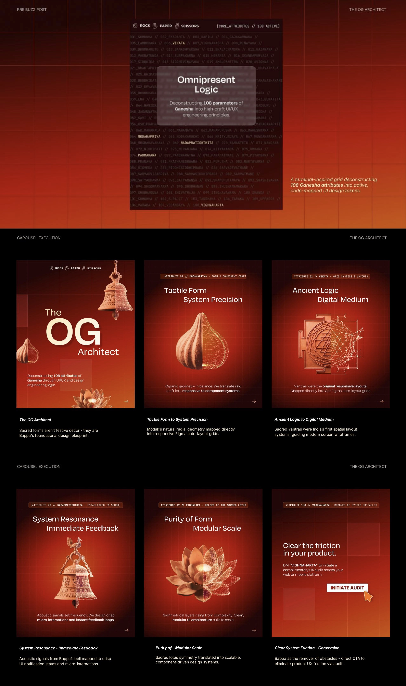
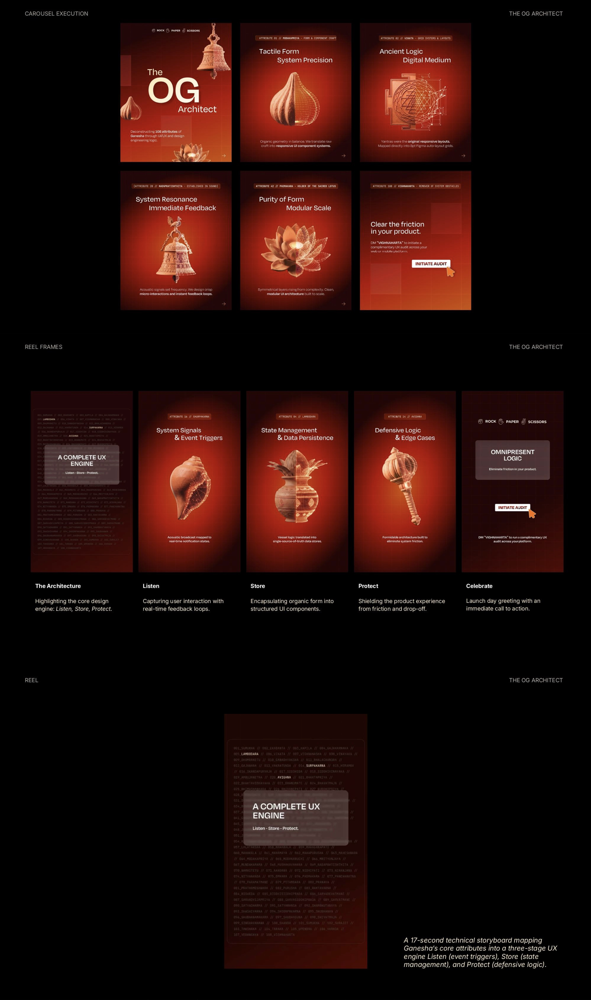
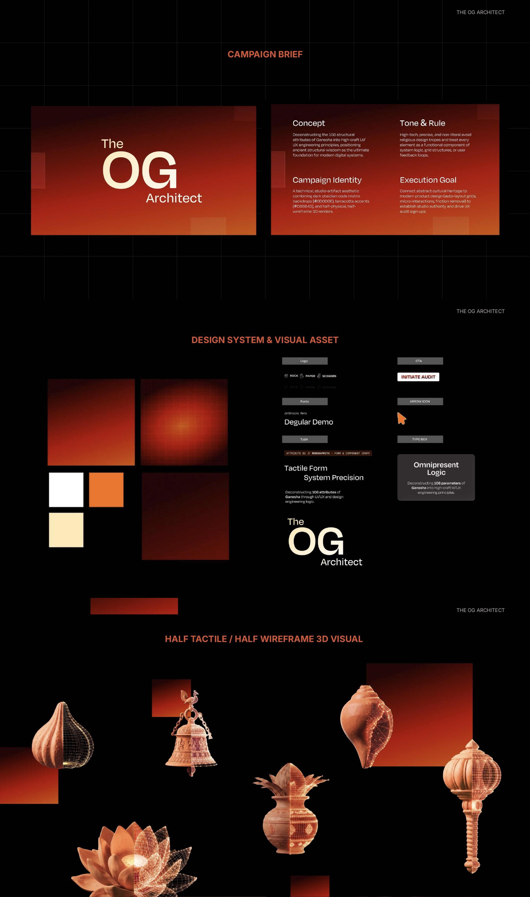

ASSESSMENT WORK · DESIGN SYSTEMS & UI ARCHITECTURE
The OG Architect
Deconstructing 108 traditional attributes of cultural iconography into scalable design systems, auto-layout component specs, and generative AI systems.







OG ARCHITECT · Listen · Store · Protect — Concept Motion Exploration
The Premise
Ganesha as the Ultimate System Architect. Reinterpreting ancient iconography through the lens of modern digital systems, scalable UI components, and purposeful information hierarchy.
108 Attributes Deconstructed
Each traditional attribute (Vighnaharta as obstacle/friction remover, Sumukha as harmonious visual balance) mapped directly into design specs, auto-layout grid logic, and micro-interactions.
Scalable UI & Motion
Integrated motion principles (Listen • Store • Protect) coupled with generative AI workflows to create scalable, culturally resonant design frameworks.